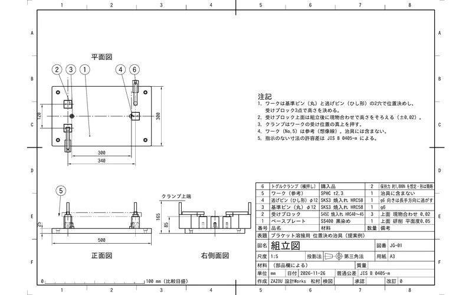

3D・図面No.01 機械設計・3D／組立図・部品図
ブラケット溶接用 位置決め治具
- どんな資料か
- プレス部品（ブラケット）を溶接するときに、毎回同じ位置に置いて押さえるための治具の3Dモデルと図面です。
- 使う場面
- 溶接や組立の段取りで治具を新しく作るとき。3Dで形を確かめてから、加工先に渡す組立図・部品図まで用意する場面を想定しています。
- 入っている内容
- 組立図（1/5・第三角法）に平面図・正面図・右側面図、部品表（6品目：材質・数量・備考）、位置決めの考え方の注記。部品図はベースプレート（1/5）で、穴位置の公差（300±0.02）・φ12H7・平面度0.05を記入。3Dは画面で回して見られます。
- 納める形式
- PDF A3・2枚
- DXF（2図）
- STEP
- 3D（ブラウザ）